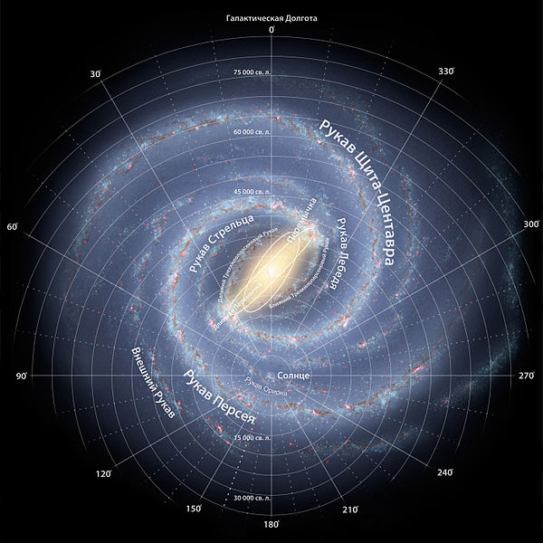
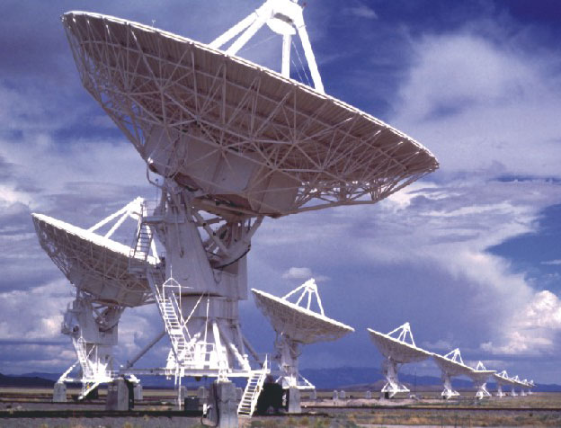
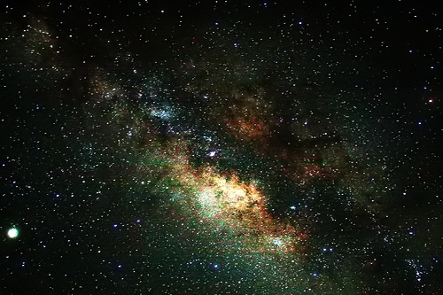
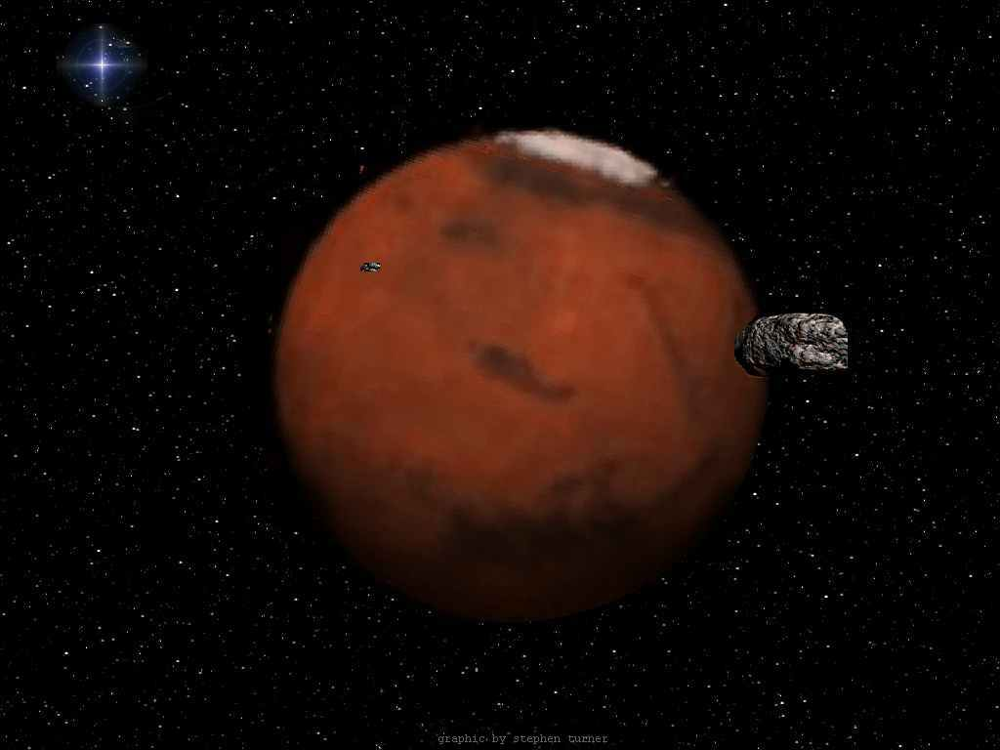
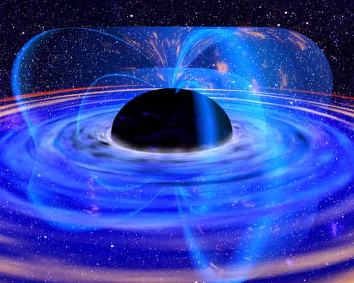

В безлунные ночи на небе хорошо видна туманная полоса Млечного Пути. Но это не скопление туманных масс, а множество звезд – наша звездная система Галактика. В Галактике по современным оценкам около 200 миллиардов звезд. Чтобы пересечь её из конца в конец световой луч при скорости 300 тысяч километров в секунду должен затратить около 100 тысяч лет.
Однако, несмотря на столь грандиозные размеры, наша Галактика лишь один из множества подобных звездных островов Вселенной. У неё есть спутники. Самые крупные из них – Большое и Малое Магеллановы Облака. Вместе с нашей Галактикой они обращаются вокруг общего центра масс. Наша Галактика, Магеллановы Облака и еще несколько звездных систем, в том числе знаменитая туманность Андромеды, образуют так называемую Местную Группу Галактик.
Современным телескопам и радиотелескопам, а также другим средствам астрономических исследований доступна колоссальная область пространства. Её радиус 10-12 миллиардов световых лет. В этой области расположены миллиарды галактик. Это – Метагалактика.

Как известно, на протяжении весьма длительного времени астрономия была чисто «оптической» наукой. Человек изучал на небе то, что он видел – сперва невооружённым глазом, а затем с помощью телескопов. С развитием радиотехники родилась радиоастрономия, значительно расширившая наши знания о Вселенной. Наконец, в последние годы в результате появления космических средств исследования возникла возможность изучения и других электромагнитных вестников Вселенной – инфракрасных, ультрафиолетовых, рентгеновских и гамма-излучений. Астрономия превратилась во всеволновую науку.
Одним из новых методов исследования космических объектов является рентгеновская астрономия. Несмотря на то, что этот метод сравнительно молод, в настоящее время Вселенную уже невозможно представить себе без тех данных, которые получены благодаря наблюдениям в рентгеновском диапазоне.
Пожалуй, ещё более многообещающим источником космической информации являются гамма-излучения. Дело в том, что энергия гамма-квантов может в сотни тысяч и миллионы раз превосходить энергию фотонов видимого света. Для таких гамма-квантов Вселенная фактически прозрачна. Они распространяются практически прямолинейно, приходят к нам от весьма удалённых объектов и могут сообщить чрезвычайно ценные сведения о многих физических процессах, протекающих в космосе.
Особенно важную информацию гамма-кванты способны принести о необычайных, экстремальных состояниях материи во Вселенной, а именно такие состояния интересуют современных астрофизиков в первую очередь. Так, например, гамма-излучение возникает при взаимодействии вещества и антивещества, а также там, где происходит рождение космических лучей – потоков частиц высоких энергий.
Главная трудность гамма-наблюдений Вселенной заключается в том, что хотя энергия космических гамма-квантов и очень велика, но число этих квантов в околоземном пространстве ничтожно мало. Современные гамма-телескопы даже от самых ярких гамма-источников регистрируют примерно один квант за несколько минут.
Значительные трудности возникают и вследствие того, что первичное космическое излучение приходится изучать на фоне многочисленных помех. Под действием заряжённых частиц космических лучей, приходящих на Землю, – протонов и электронов, начинают ярко «светиться» в гамма-диапазоне и земная атмосфера, и конструкции космического аппарата, на борту которого установлена регистрирующая аппаратура.
Как же выглядит Вселенная в гамма-лучах? Представьте себе на минуту, что ваши глаза чувствительны не к видимому свету, а к гамма-квантам. Какая картина предстала перед нами? Взглянув на небо, мы не увидели бы ни Солнца, ни привычных созвездий, а Млечный Путь выглядел бы узкой светящейся полосой. Кстати, подобное распределение галактического гамма-излучения подтвердило предположение, высказанное в своё время известным советским физиком академиком В. Л. Гинзбургом о том, что космические лучи имеют в основном галактическое, а не внегалактическое происхождение.
В настоящее время с помощью гамма-телескопов, установленных на космических аппаратах, зарегистрировано несколько десятков источников космического гамма-излучения.
Пока ещё нельзя точно сказать, что они собой представляют, – звёзды ли это или другие компактные объекты, или, может быть, протяжённые образования. Есть основания предполагать, что гамма-излучение возникает при нестационарных, взрывных явлениях. К числу таких явлений относятся, например, вспышки сверхновых звёзд. Однако при обследовании 88 известных остатков сверхновых было обнаружено только два источника гамма-излучения.
 У планеты Марс есть два маленьких спутника – Фобос и Деймос. Деймос обращается по орбите, удаленной от планеты примерно на 23 тыс. км, а Фобос движется на расстоянии всего около 9 тыс. км от Марса. Вспомним, что Луна удалена от нас на 385 тыс. км, т.е. находится в 40 с лишним раз дальше от Земли, чем Фобос от Марса.
Вся история изучения Фобоса и Деймоса полна удивительных событий и увлекательных загадок. Судите сами: первое напоминание о наличии у Марса двух небольших спутников появилось не в научных трудах, а на страницах знаменитых «Путешествий Гулливера», написанных Джонатаном Свифтом в начале 18 столетия. По ходу событий Гулливер оказывается на летучем острове Лапуте. И местные астрономы рассказывают ему, что им удалось открыть два маленьких спутника, обращающихся вокруг Марса.
В действительности же марсианские луны были открыты А.Холлом лишь спустя полтора столетия после выхода романа в свет, во время великого противостояния Марса 1877 г. И открыты при исключительно благоприятных атмосферных условиях после упорных многодневных наблюдений, на пределе возможностей инструмента и человеческих глаз.
Сейчас можно только гадать, что побудило Свифта предсказать существование двух спутников Марса. Во всяком случае, не телескопические наблюдения. Скорее всего, Свифт предполагал, что число спутников у планет должно возрастать по мере удаления от Солнца.
В то время было известно, что у Венеры спутников нет, вокруг Земли обращается один спутник – Луна, а вокруг Юпитера – четыре, они были открыты Галилеем в 1610 г. Получалось «очевидная» геометрическая прогрессия, в которую на свободное место, соответствующее Марсу, казалось, сама собой просилась двойка.
Впрочем, Свифт предсказал не только существование Фобоса и Деймоса, но и то, что радиус орбиты ближайшего спутника Марса равен трем поперечником планеты, а внешнего – пяти. Три поперечника – это около20 тысяч км. Примерно на таком расстоянии расположена орбита Деймоса.
равда, не внутреннего спутника, как утверждал Свифт, а внешнего – но все равно совпадение впечатляет. Разумеется, именно совпадение.
В очередной раз очередной раз внимание к марсианским лунам было привлечено во второй половине текущего столетия. Сравнивая результаты наблюдений, проведенных в разные годы, астрономы пришли к выводу, что ближайший спутник Марса Фобос испытывает торможение, благодаря которому постепенно приближается к поверхности планеты. Явление выглядело загадочно. Во всяком случае, никакими эффектами небесной механики наблюдаемое торможение объяснить не удалось.
В последние годы большую популярность в астрофизике приобрела гипотеза так называемых черных дыр.
вадцатый век принес с собой целый ряд удивительных открытий в физике и астрономии. Идет своеобразная цепная реакция: обнаруживаются диковинные явления, а их дальнейшее изучение и осмысление приводит к открытию явлений, еще более поразительных. Таков закономерный путь развития естествознания.
Oдин из самых диковинных, правда, пока еще «теоретических» космических объектов, который в последние годы привлекает особое внимание физиков и астрофизиков, – черные дыры. Одно название чего стоит: дыры во Вселенной да еще черные!
Согласно общей теории относительности Эйнштейна, силы тяготения непосредственно связаны со свойствами пространства. Любое тело не просто существует в пространстве само по себе, но определяет его геометрию. Однажды какой-то предприимчивый репортер обратился к Эйнштейну с просьбой изложить суть его теории в одной фразе и так, чтобы это было понятно широкой публике. «Раньше полагали, – ответил на это Эйнштейн, – что если бы из Вселенной исчезла вся материя, то пространство и время сохранилось бы; теория относительности утверждает, что вместе с материей исчезли бы также пространство и время».
Любые массы искривляют окружающее пространство. В повседневной жизни мы этой искривленности практически не ощущаем, поскольку нам обычно приходится иметь дело со сравнительно небольшими массами. Однако в очень сильных полях тяготения этот эффект может приобретать существенное значение.
За последние годы во Вселенной обнаружен целый ряд явлений, которые свидетельствуют о возможности концентрации огромных масс в сравнительно небольших областях пространства.
Если некоторая масса вещества окажется в малом объеме, критическом для данной массы, то под действием собственного тяготения это вещество начинает сжиматься. Наступает своеобразная гравитационная катастрофа – гравитационный коллапс.
